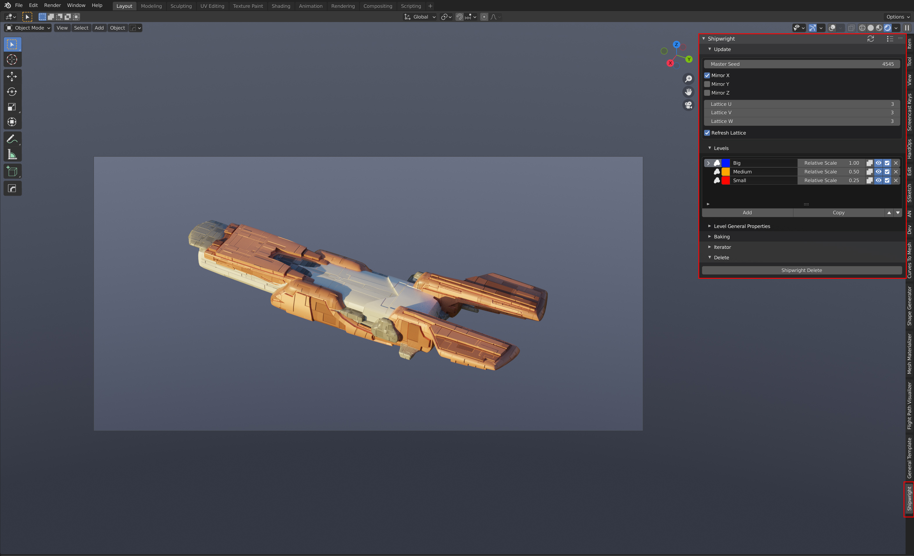

Getting Started
Once you have installed the add-on, you can get started by loading the main sample file or by adding your own Shipwright object. You can then access the parameters from the properties panel.
Load Main File

Load the shipright.x.x.x.blend file into Blender.
Make sure that the main object (‘Shipwright’) is selected.
There are other files available in different configurations.
Create a new object
{kind=link}
You can alternatively create a new Shipwright object through the Add menu in Blender. This menu is either accessible through the top of the 3D view or by pressing Shift+A.
Accessing Parameters
Access the “Shipwright” tab on the right hand side of the viewport by pressing the n key in the viewport. This is the main panel that controls all the parameters for the object.
If the Shipwright object is selected, you should see all the parameters that make up the Shipwright object.
Try changing one of these parameters, such as the Master Seed value. You should see the object change shape to a new random configuration.
See the Parameters section for more.